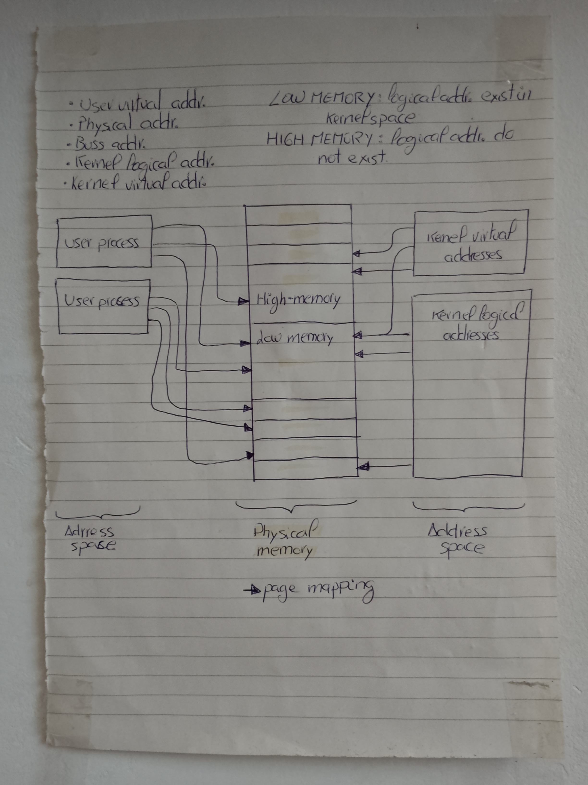
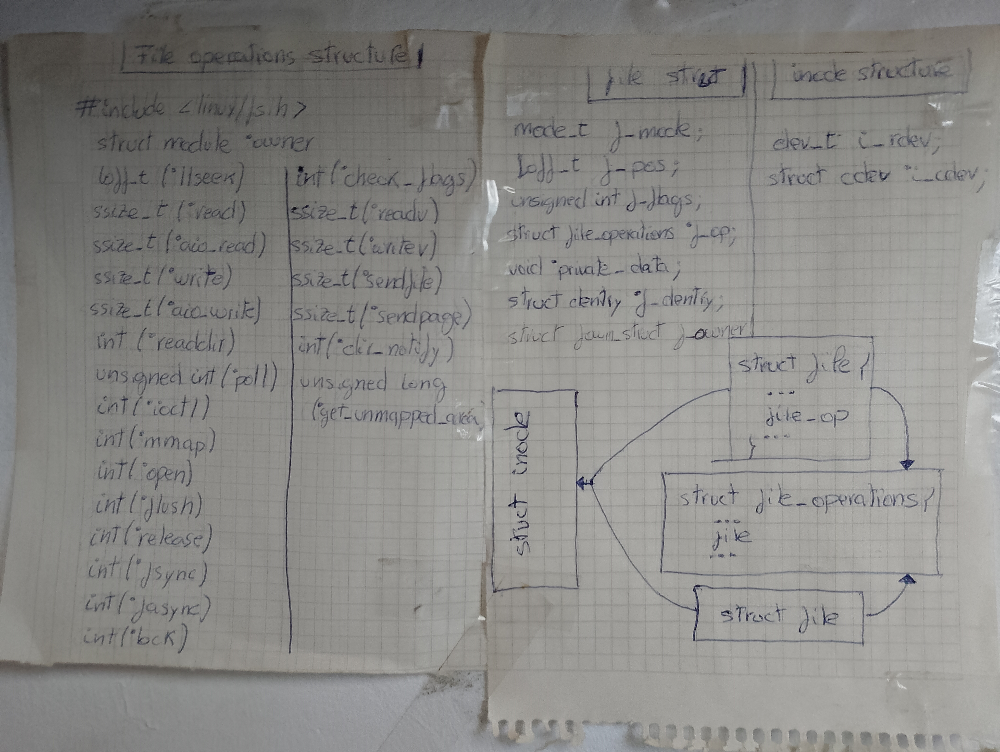

Entrada/Salida y Gestión de Memoria (E/S & MM) - Teoría
Conceptos Fundamentales
La interacción entre el espacio de usuario, el sistema de archivos y los dispositivos de hardware descansa sobre tres pilares conceptuales en el kernel de Linux: los descriptores de archivo, el mapeo de memoria y la interfaz de control E/S.
1. Descriptores de Archivo (File Descriptors - FD)
En Linux, la abstracción “todo es un archivo” significa que tanto los ficheros en disco como los dispositivos físicos (bloques, caracteres) se exponen al espacio de usuario mediante un entero no negativo denominado File Descriptor (FD).
Estructura en el Kernel:
Cada proceso mantiene una tabla de descriptores de archivo en su
task_struct. Estos FDs apuntan a una estructurastruct fileen el kernel, la cual contiene los punteros a las operaciones del archivo (file_operations) asociadas al driver o sistema de archivos correspondiente (openat,read,write,ioctl).
2. Mapeo de Memoria en Espacio de Usuario (mmap)
La llamada al sistema mmap() permite proyectar un archivo o un dispositivo físico
directamente en el espacio de direcciones virtuales del proceso invocador.
Ventajas frente a
read/write:Evita la doble copia de datos entre el buffer del espacio de kernel (page cache) y el buffer de espacio de usuario, reduciendo drásticamente la carga sobre la CPU.
Tipos de Mapeo:
MAP_SHARED: Los cambios en la memoria son visibles por otros procesos que mapeen el mismo recurso y se escriben eventualmente en el dispositivo subyacente.MAP_PRIVATE: Crea un mapeo de Copia en Escritura (Copy-On-Write / COW). Los cambios no son visibles para otros procesos ni afectan al recurso físico.
3. Control de Dispositivos E/S ioctl
Mientras que read() y write() gestionan el flujo plano de datos, ioctl()
(Input/Output Control) es la “navaja suiza” de los syscalls para la comunicación
de control fuera de banda (out-of-band).
Permite al espacio de usuario enviar comandos específicos al controlador o driver (p. ej., consultar el estado de un bus, configurar parámetros de DMA o solicitar operaciones específicas del hardware que no encajan en el modelo estándar de lectura/escritura).
See also
Para revisar los casos de prueba prácticos aplicados a estas llamadas al sistema, consulte la sección de pruebas asociadas en Entrada/Salida y Gestión de Memoria (E/S & MM) - Tests.
Interacción con Hardware
El subsistema de E/S del kernel coordina la transferencia de datos entre la memoria RAM y los periféricos conectados al bus PCI. Comprender esta capa requiere analizar cómo se traducen las direcciones virtuales a físicas y cómo los dispositivos acceden a la memoria sin saturar la CPU.
1. Acceso Directo a Memoria (Direct Memory Access - DMA)
DMA es el mecanismo que permite a los dispositivos de hardware (controladores NVMe, tarjetas de red, GPUs) leer o escribir datos directamente en la memoria RAM del sistema sin la intervención continua del procesador.
Mecanismo |
Intervención de CPU |
Caso de Uso Típico |
|---|---|---|
E/S Programada (PIO) |
Alta (byte a byte por registros) |
Dispositivos lentos / Legacy (ISA, Serie) |
Operación DMA |
Baja (solo inicio y fin de transferencia) |
Dispositivos de alto rendimiento (PCIe, NVMe, GbE) |
2. Unidad de Gestión de Memoria E/S (IOMMU)
Así como la MMU traduce las direcciones virtuales del proceso (VA) a direcciones físicas de la RAM (PA), la IOMMU (Input/Output Memory Management Unit) traduce las direcciones virtuales de E/S (IOVA) empleadas por los dispositivos PCI.
Protección y Aislamiento: Impide que un dispositivo PCI malintencionado o defectuoso realice accesos DMA en regiones de memoria no autorizadas pertenientes al kernel u otros procesos.
Remapeo de Direcciones: Permite que dispositivos de 32 bits accedan a rangos de memoria RAM de 64 bits mediante tablas de traducción de páginas E/S.
Passthrough y Virtualización: Facilita la asignación directa (device passthrough) de un endpoint PCI hacia una máquina virtual de forma segura.
3. Mapeo en la Jerarquía del Bus PCI
Los dispositivos en la topología PCI se identifican mediante una tripleta BDF
(Bus:Device:Function), dentro de un dominio específico (p. ej., 0000:01:00.0).
Host Bridge: Punto de enlace entre la CPU/interconexión del sistema y la raíz de la topología PCI.
PCI Bridge: Conecta diferentes segmentos de bus (p. ej., permitiendo la expansión de un bus secundario a partir de un bus primario).
MMIO (Memory-Mapped I/O): Los registros de control e interfaces del dispositivo se proyectan en el espacio de direcciones de memoria del kernel/usuario, permitiendo interactuar con el hardware mediante instrucciones de memoria estándar.
See also
Para revisar los resultados y trazado de pruebas reales en la jerarquía PCI, consulte Entrada/Salida y Gestión de Memoria (E/S & MM) - Tests.
Gestión de Direcciones y Estructuras de VFS
Mapeo de Memoria y Espacios de Direcciones

Esquema de Mapeo de Direcciones: Relación entre espacios de usuario/kernel y la RAM.
Linux Kernel Memory Management(ASCII art).
El kernel de Linux gestiona distintos tipos de direcciones para coordinar la CPU, la RAM y los buses:
User Virtual Address: Direcciones vistas por los procesos de usuario.
Kernel Logical Address: Mapeo directo y continuo en Low Memory (offset fijo respecto a la memoria física).
Kernel Virtual Address: Mapeos no continuos (p. ej. creados mediante
vmalloc).Bus Address: Direcciones utilizadas por los dispositivos en el bus PCI/DMA para acceder a la RAM.
Low Memory vs High Memory: En arquitecturas donde la RAM supera el espacio direccionable directo del kernel, Low Memory mantiene mapeo lógico permanente, mientras que High Memory requiere mapeos explícitos y dinámicos.
Estructuras Internas de VFS (file_operations, file e inode)

Relación de estructuras internas en el VFS del Kernel de Linux.
Virtual File System(ASCII art).
Cuando una syscall como mmap() o ioctl() se invoca, el kernel navega a través de tres estructuras fundamentales:
struct inode: Representa el fichero o nodo de dispositivo físico en el sistema (contiene número de dispositivoi_rdev, punteros a cdev, etc.).struct file: Representa una instancia de un fichero abierto por un proceso (contiene la posición del cursorf_pos, flagsf_flagsy el punterof_op).struct file_operations: Tabla de callbacks que implementa las operaciones reales del driver/sistema de archivos (read,write,mmap,ioctl,poll,release).